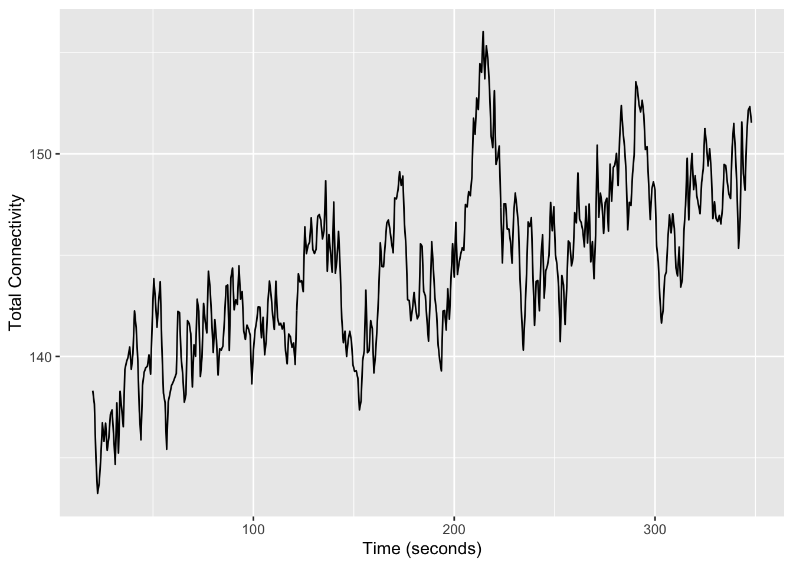

library(RNifti)
library(dplyr)
library(roll)
library(tidyr)
library(purrr)
library(ggplot2)
library(fs)8 Group ICA of fMRI Toolbox (GIFT)
Independent Component Analysis (ICA) is a method for identifying “components” that are spatial regions of the brain exhibiting distinctly correlated activity over time (Calhoun et al., 2001). These components can be thought of as functional brain networks. For functional connectivity research, the timeseries of these ICA-derived networks are often correlated with each other to assess inter-network correlations, enabling investigators to study how these independent brain systems interact and communicate with one another.
Calhoun, V. D., Adali, T., Pearlson, G. D., & Pekar, J. J. (2001). A method for making group inferences from functional MRI data using independent component analysis. Human Brain Mapping, 14(3), 140–151. https://doi.org/10.1002/hbm.1048
Du, Y., Fu, Z., Sui, J., Gao, S., Xing, Y., Lin, D., Salman, M., Abrol, A., Rahaman, M. A., Chen, J., et al. (2020). NeuroMark: An automated and adaptive ICA based pipeline to identify reproducible fMRI markers of brain disorders. NeuroImage: Clinical, 28, 102375. https://doi.org/10.1016/j.nicl.2020.102375
Intrinsic functional connectivity networks within the resting-state fMRI data were estimated with NeuroMark (Du et al., 2020) using the Group ICA of fMRI Toolbox (GIFT). NeuroMark is an automated and adaptive independent component analysis pipeline that uses group ICA-based templates as spatial priors to guide the identification of subject-specific independent component networks and the extraction of network features (e.g., timecourses, functional connectivity within and between networks, graph theoretic measures). For full details on the output and methods of GIFT, please refer to the toolbox documentation.
Note: if all you need are estimates of functional connectivity between ICA components, please see the MRI Image Derived Phenotype table, mris/idp/mri.{tsv,json}. Here, we outline how A2CPS structures the outputs and highlight a few key files that may be helpful for custom analyses (e.g., estimating dynamic connectivity).
8.0.1 Locate Data
On TACC, the neuroimaging data are stored underneath the releases. For example, data release v2.#.# is underneath
pre-surgery/mrisThe GIFT derivatives are underneath mris/derivatives/gift. This structure follows the BIDS method of storing derived datasets. Inputs to GIFT are stored underneath the top-level “sub-[recordid]” directories.
$ tree mris/derivatives/gift/sub-10003
gift/sub-10003
└── ses-V1
└── func
├── sub-10003_ses-V1_task-cuff_run-01_bold.nii.gz
├── sub-10003_ses-V1_task-rest_run-01_bold.nii.gz
└── sub-10003_ses-V1_task-rest_run-02_bold.nii.gzThese files are copies of the outputs of fmriprep. Specifically, they are are files matching *space-MNI152NLin2009cAsym_res-2_desc-preproc*.
The GIFT derivatives are underneath the subfolder “derivatives”.
$ ls mris/derivatives/gift/derivatives/
gift-neuromark_fmri_2.0_modelorder-175 gift-neuromark_fmri_2.1_modelorder-multiWe provide results from two different NeuroMark network templates (alternatively called “model”). Templates are the spatial priors that were used in the estimation of ICA components. The first is NeuroMark 2.0 (model order = 175) which includes 58 non-artifactual components produced from a single model order of 175 components (Iraji et al., 2023). The second is the multi-scale NeuroMark 2.1 which includes 105 non-artifactual components covering diverse spatial scales which are aggregated from diverse model orders (Iraji et al., 2023). A typical analysis will involve only one model. Without a specific reason to prefer one template, the 2.1, multi-order model is recommended. For additional details on the templates, please see this page of references.
Iraji, A., Fu, Z., Faghiri, A., Duda, M., Chen, J., Rachakonda, S., DeRamus, T., Kochunov, P., Adhikari, B. M., Belger, A., et al. (2023). Identifying canonical and replicable multi-scale intrinsic connectivity networks in 100k+ resting-state fMRI datasets. Human Brain Mapping, 44(17), 5729–5748. https://doi.org/10.1002/hbm.26472
The model directories are themselves organized according to BIDS.
$ ls mris/derivatives/gift/derivatives/gift-neuromark_fmri_2.1_modelorder-multi | head
derivatives
sub-10003
sub-10008
sub-10010
sub-10011
sub-10013
sub-10015
sub-10017
sub-10020
sub-100238.0.2 Extract Data
In each of these sub-[recordid] folders, GIFT outputs the spatial IC maps and timecourses for each run.
$ tree mris/derivatives/gift/derivatives/gift-neuromark_fmri_2.1_modelorder-multi/sub-10003
mris/derivatives/gift/derivatives/gift-neuromark_fmri_2.1_modelorder-multi/sub-10003
└── ses-V1
└── func
├── sub-10003_ses-V1_task-cuff_run-01_bold_ic_maps.nii.gz
├── sub-10003_ses-V1_task-cuff_run-01_bold_timecourses.nii.gz
├── sub-10003_ses-V1_task-rest_run-01_bold_ic_maps.nii.gz
├── sub-10003_ses-V1_task-rest_run-01_bold_timecourses.nii.gz
├── sub-10003_ses-V1_task-rest_run-02_bold_ic_maps.nii.gz
└── sub-10003_ses-V1_task-rest_run-02_bold_timecourses.nii.gzThe IC maps are 4D files, with spatial dimensions matching the input file and the fourth dimension matching the number of non-artifactual components in the model (below, 105).
$ fslinfo sub-10003_ses-V1_task-cuff_run-01_bold_ic_maps.nii.gz
data_type FLOAT32
dim1 97
dim2 115
dim3 97
dim4 105
datatype 16
pixdim1 2.000000
pixdim2 2.000000
pixdim3 2.000000
pixdim4 0.000000
cal_max 0.000000
cal_min 0.000000
file_type NIFTI-1+The timecourse files are 2D arrays, with columns corresponding to the number of non-artifacual components in the model and the rows corresponding to each timepoint1.
1 The original fMRIs have 450 timepoints, but in all analyses, the first 15 are excluded to remove Non-Steady State volumes. For details, see Sadil et al. (2024).
Sadil, P., Arfanakis, K., Bhuiyan, E. H., Caffo, B., Calhoun, V. D., Clauw, D. J., DeLano, M. C., Ford, J. C., Gattu, R., Guo, X., Harris, R. E., Ichesco, E., Johnson, M. A., Jung, H., Kahn, A. B., Kaplan, C. M., Leloudas, N., Lindquist, M. A., Luo, Q., … Chronic Pain Signatures Consortium, T. A. to. (2024). Image processing in the acute to chronic pain signatures (A2CPS) project. bioRxiv. https://doi.org/10.1101/2024.12.19.627509
$ fslinfo sub-10003_ses-V1_task-cuff_run-01_bold_timecourses.nii.gz
data_type FLOAT32
dim1 435
dim2 105
dim3 1
dim4 1
datatype 16
pixdim1 2.000000
pixdim2 2.000000
pixdim3 2.000000
pixdim4 0.000000
cal_max 0.000000
cal_min 0.000000
file_type NIFTI-1+Many analyses will be based on either these spatial maps or timecourses but see 8.0.3. For example, let’s use these components to search for so-called systematic low-frequency oscillations (Korponay et al., 2024). One signature of these oscillations is that the total functional connectivity – the sum of the all connectivity between each pair of components – increases over time.
Korponay, C., Janes, A. C., & Frederick, B. B. (2024). Brain-wide functional connectivity artifactually inflates throughout functional magnetic resonance imaging scans. Nature Human Behaviour, 8(8), 1568–1580.
First, define a helper function for estimating the rolling correlation. We’ll use a window of 25 timepoints, which, given the 0.8 second Repetition Time, corresponds to 20 seconds.
do_cor <- function(x, y, width = 25) {
rho <- roll_cor(x, y, width = width)
tibble(rho = rho, t = 1:length(x))
}Next, add a helper function for taking
get_total_correlation <- function(file) {
timecourse <- readNifti(file)
crossing(
src = 1:ncol(timecourse),
dst = 1:ncol(timecourse)
) |>
filter(dst > src) |>
mutate(
correlations = map2(
src,
dst,
~ do_cor(timecourse[, .x], timecourse[, .y])
)
) |>
unnest(correlations) |>
na.omit() |> # NAs caused by not having enough timepoints for window
summarise(total_connectivity = sum(atanh(rho)), .by = t)
}Use these helper functions to calculate the total connectivity for each REST1 scan.
d <- crossing(
file = dir_ls(
"data/gift/derivatives/gift-neuromark_fmri_2.1_modelorder-multi",
recurse = TRUE,
glob = "*rest_run-01*timecourses.nii.gz"
)
) |>
mutate(total_connectivity = map(file, get_total_correlation)) |>
unnest(total_connectivity)And now, plot.
d |>
mutate(t = t * 0.8) |> # convert to seconds
summarise(med_total_connectivity = median(total_connectivity), .by = t) |>
ggplot(aes(x = t, y = med_total_connectivity)) +
geom_line() +
ylab("Total Connectivity") +
xlab("Time (seconds)")
For the REST1 scans, the sum of connectivity appears to increase by around \(150/130 = 15\%\), which is consistent with the presence of systematic low-frequency oscillations.
8.0.3 Additional Outputs
For analyses that require the full set of raw GIFT outputs, please see the most deeply nested “derivatives folder”
ls mris/derivatives/gift/derivatives/gift-neuromark_fmri_2.1_modelorder-multi/derivatives | head
sub-10003_ses-V1_task-cuff_run-01_bold_neuromark_fmri_2.1_modelorder-multi
sub-10003_ses-V1_task-rest_run-01_bold_neuromark_fmri_2.1_modelorder-multi
sub-10003_ses-V1_task-rest_run-02_bold_neuromark_fmri_2.1_modelorder-multi
sub-10008_ses-V1_task-cuff_run-01_bold_neuromark_fmri_2.1_modelorder-multi
sub-10008_ses-V1_task-rest_run-01_bold_neuromark_fmri_2.1_modelorder-multi
sub-10008_ses-V1_task-rest_run-02_bold_neuromark_fmri_2.1_modelorder-multi
sub-10010_ses-V1_task-cuff_run-01_bold_neuromark_fmri_2.1_modelorder-multi
sub-10010_ses-V1_task-cuff_run-02_bold_neuromark_fmri_2.1_modelorder-multi
sub-10010_ses-V1_task-rest_run-01_bold_neuromark_fmri_2.1_modelorder-multi
sub-10010_ses-V1_task-rest_run-02_bold_neuromark_fmri_2.1_modelorder-multiIn this folder, there is a single subfolder corresponding to the outputs for each individual run2. For details on these files, please see the the GIFT documentation.
2 Although GIFT can facilitate group-level analyses, the A2CPS derivatives include only the run-level components.
8.1 Considerations While Working on the Project
8.1.1 Variability Across Scanners
Many MRI biomarkers exhibit variability across the scanners, which may confound some analyses. For an up-to-date assessment of the issue and overview of current thinking, please see Confluence.
8.1.2 Data Quality
As with any MRI derivative, all pipeline derivatives have been included. This means that products were included regardless of their quality, and so some products may have been generated from images that are known to have poor quality—rated “red”, or incomparable. For details on the ratings and how to exclude them, see Appendix A. Additionally, extensive QC has not yet been performed on the derivatives themselves, and so there may be cases where pipelines produced atypical outputs. For an overview of planned checks, see Confluence.
8.1.3 Data Generation
The GIFT outputs were generated by the gift_app component of the A2CPS Imaging pipeline. Prior to NeuroMark, the resting-state fMRI data were minimally preprocessed (Sadil et al. (2024)), and then resampled to 2.4mm isotropic voxel size to ensure identical dimensions across all subjects. After resampling, volumes were spatially smoothed using a Gaussian kernel with a full width at half maximum of 6mm. NeuroMark was then applied separately for each resting-state run from each subject and separately for each template. The NeuroMark pipeline included the following configuration options: brain masking using the default mask plus intracranial volume, coregistration of the functional data to a functional template in MNI space (separate from the registration performed during minimal preprocessing), removal of the first 15 volumes (i.e., dummy scans), bandpass filtering (0.01-0.15Hz), removal of the mean per timepoint, multivariate-objective optimization ICA with reference (Du & Fan, 2013), and z-score scaling of results. The NeuroMark outputs include, separately for each template applied to each resting-state run from each subject, the timecourses and spatial maps of each intrinsic component network, functional network connectivity estimates, summary reports, and visualizations of the networks.
Du, Y., & Fan, Y. (2013). Group information guided ICA for fMRI data analysis. Neuroimage, 69, 157–197. https://doi.org/10.1016/j.neuroimage.2012.11.008
8.1.4 Citations
If you use these products in your analyses, please cite the relevant papers written by members TReNDS.